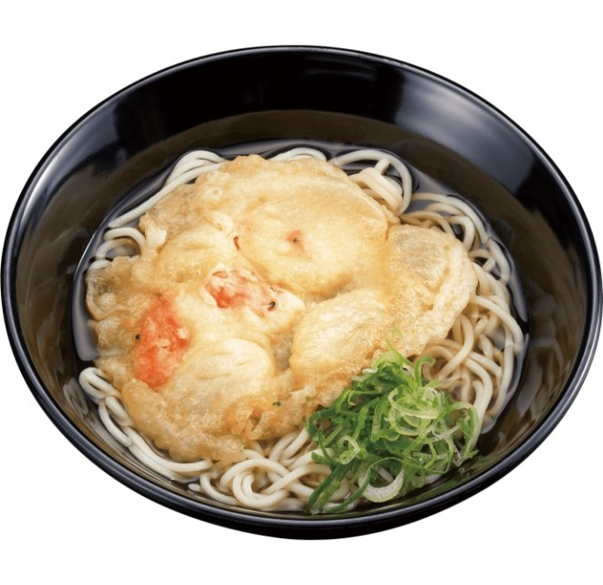
| 営業時間 | 6:00〜24:00 |
|---|---|
| 定休日 | 無休 |
| 住所 | 兵庫県姫路市駅前町188-1 JR姫路駅 山陽本線下りホーム |
| 予約 | 不可 — 公式サイト |
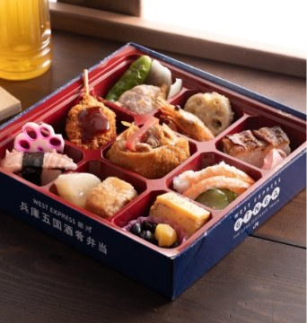
| 営業時間 | 9:00〜20:00 |
|---|---|
| 定休日 | 要確認 |
| 住所 | 兵庫県姫路市駅前町363-1 |
| 予約 | 不要 — ☎ 079-223-8652 ／ 公式サイト |
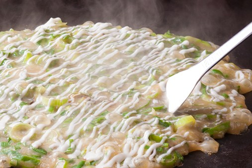
| 営業時間 | 平日 11:30〜15:00／17:00〜23:00、土日祝 11:30〜23:00 |
|---|---|
| 定休日 | 12月31日・1月1日 |
| 住所 | 兵庫県姫路市東駅前町57 あらきビル1F |
| 予約 | 可 — ☎ 079-280-3411 ／ 公式サイト |
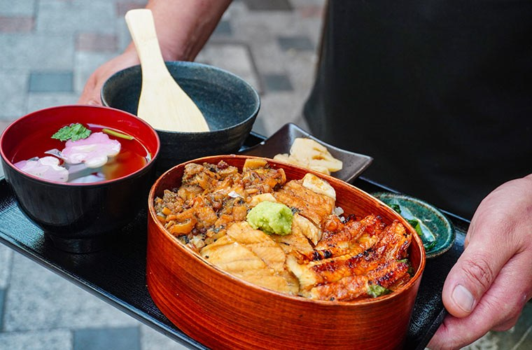
| 営業時間 | 11:00〜20:00（L.O.19:30） |
|---|---|
| 定休日 | 要確認 |
| 住所 | 兵庫県姫路市駅前町301 |
| 予約 | 可 — ☎ 079-226-6789 ／ 公式サイト |
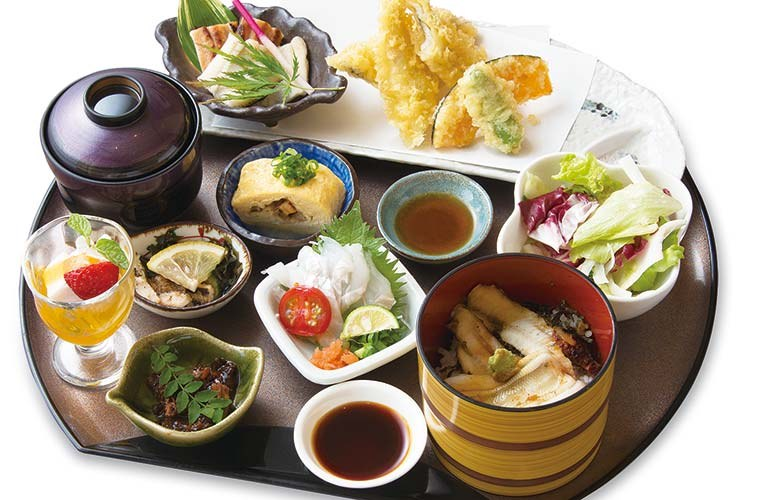
| 営業時間 | ランチ 11:00〜14:00（L.O.13:30）／ディナー 17:00〜22:00（L.O.21:00） |
|---|---|
| 定休日 | 要確認 |
| 住所 | 兵庫県姫路市十二所前町88 |
| 予約 | 推奨 — ☎ 079-284-1239 ／ 公式サイト |
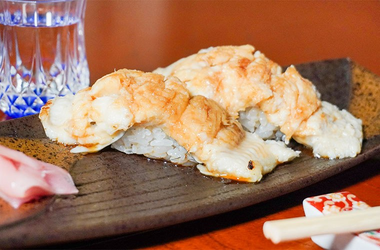
| 営業時間 | ランチ 11:00〜14:00／ディナー 16:30〜23:00 |
|---|---|
| 定休日 | 要確認 |
| 住所 | 兵庫県姫路市坂元町35 |
| 予約 | 推奨 — ☎ 079-222-6961 |
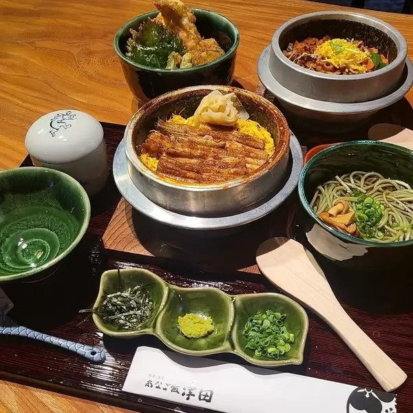
| 営業時間 | ランチ 11:30〜15:00（L.O.14:00）／ディナー 17:30〜21:30（L.O.20:30） |
|---|---|
| 定休日 | 要確認 |
| 住所 | 兵庫県姫路市網干区津市場564 |
| 予約 | 推奨 — ☎ 079-280-8110 ／ 公式サイト |
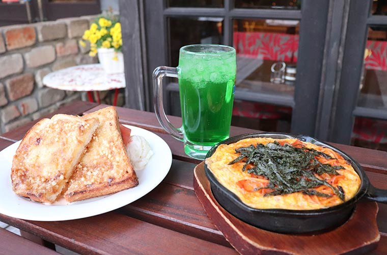
| 営業時間 | 7:00〜21:30（L.O.21:00） |
|---|---|
| 定休日 | 元旦のみ |
| 住所 | 兵庫県姫路市市川台1-7 |
| 予約 | 不要 — ☎ 079-289-1120 ／ 公式サイト |
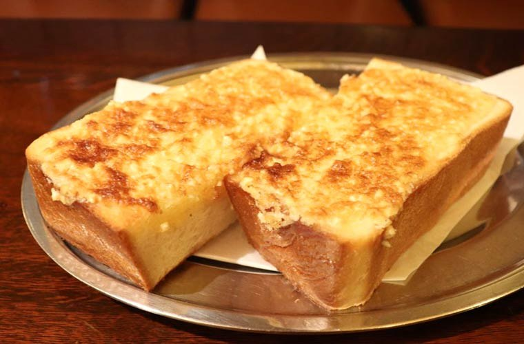
| 営業時間 | 7:30〜17:00（モーニングは11:00まで） |
|---|---|
| 定休日 | 無休 |
| 住所 | 兵庫県姫路市綿町89 |
| 予約 | 不要 — ☎ 079-222-0071 |
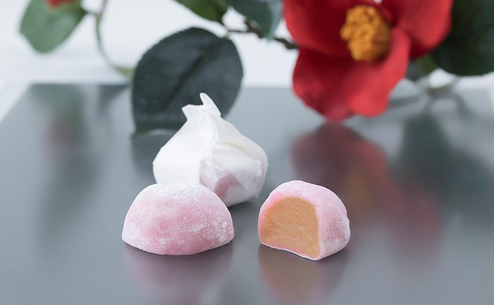
| 営業時間 | 本店 9:00〜18:00ごろ（店舗により異なる。ピオレ姫路おみやげ館店は施設に準ずる） |
|---|---|
| 定休日 | 要確認 |
| 住所 | 兵庫県姫路市延末3-5（本店） |
| 予約 | 不要 — ☎ 079-292-0830 ／ 公式サイト |
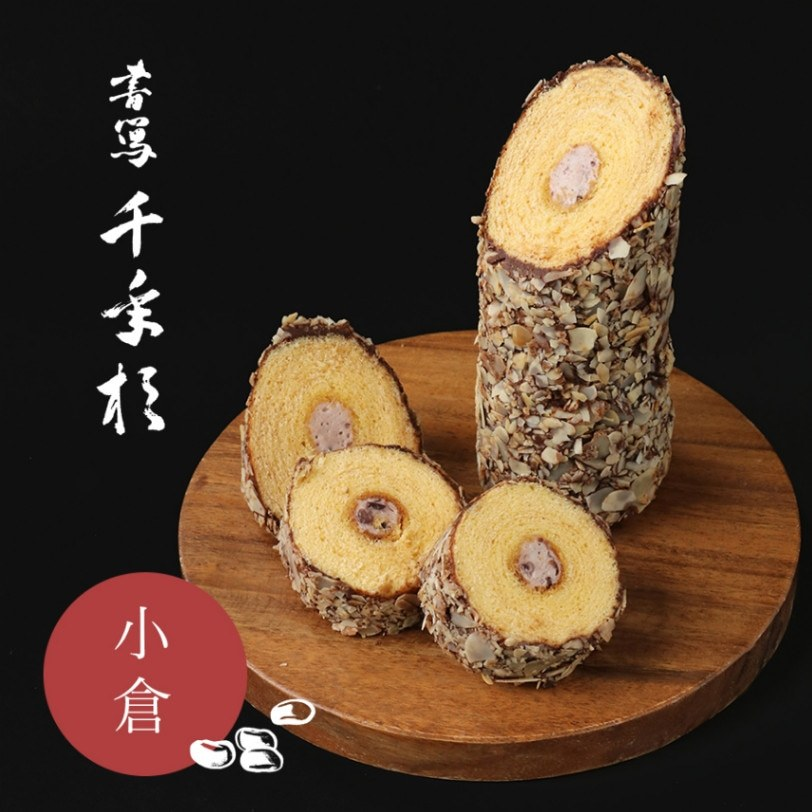
| 営業時間 | 要確認（本店・姫路駅中央口店とも通常10:00頃〜19:00頃） |
|---|---|
| 定休日 | 要確認 |
| 住所 | 兵庫県姫路市二階町95 |
| 予約 | 不要 — ☎ 079-285-3509 ／ 公式サイト |
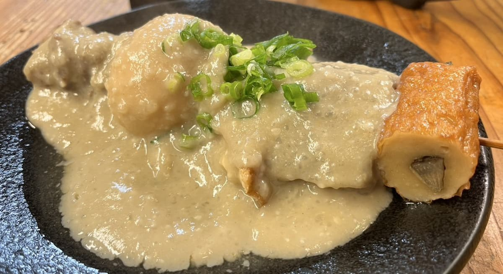
| 営業時間 | 平日 11:30〜14:00（L.O.13:30）／16:30〜21:30（L.O.21:00）、土 11:30〜21:30、日祝 11:30〜20:30 |
|---|---|
| 定休日 | 水曜日 |
| 住所 | 兵庫県姫路市東駅前町58 |
| 予約 | 推奨 — ☎ 079-221-3573 ／ 公式サイト |
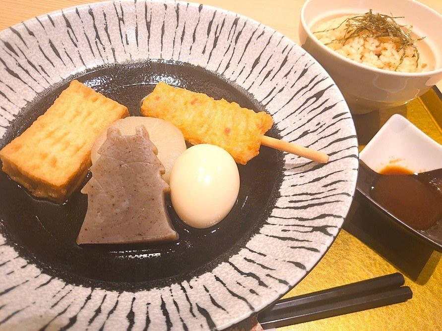
| 営業時間 | 11:00〜20:00（L.O.19:45） |
|---|---|
| 定休日 | ピオレ姫路の休館日に準ずる |
| 住所 | 兵庫県姫路市豆腐町222 ピオレ姫路おみやげ館1階 |
| 予約 | 不可 — ☎ 079-280-6288 ／ 公式サイト |
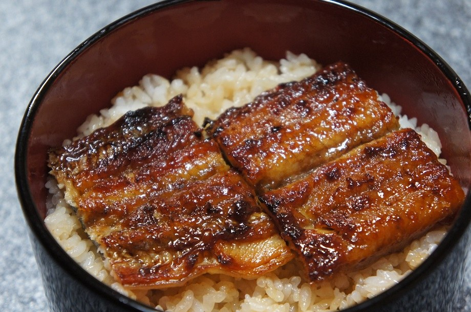
| 営業時間 | 11:30〜14:00（L.O.13:30）／17:00〜20:00（L.O.20:00） |
|---|---|
| 定休日 | 日曜・祝日 |
| 住所 | 兵庫県姫路市魚町126番地 |
| 予約 | 推奨 — ☎ 079-223-2517 ／ 公式サイト |
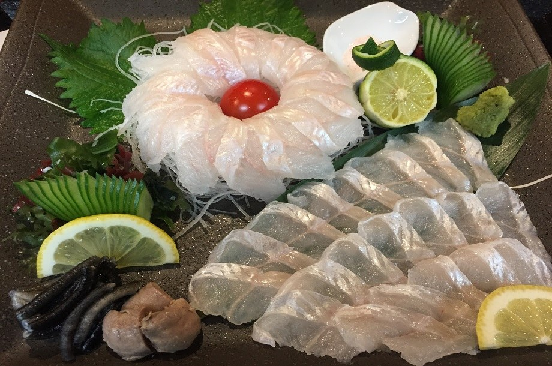
| 営業時間 | 11:30〜14:00（売切れ次第終了）／17:30〜22:00 |
|---|---|
| 定休日 | 月曜（ランチは月・火曜休み） |
| 住所 | 兵庫県姫路市駅前町345 みき正駅前ビル地下1階 |
| 予約 | 推奨 — ☎ 079-288-7714 ／ 公式サイト |
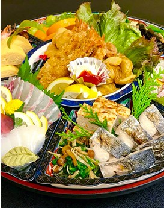
| 営業時間 | 10:00〜22:00（完全予約制。希望時間を伝える） |
|---|---|
| 定休日 | 月曜 |
| 住所 | 兵庫県姫路市栗山町167 |
| 予約 | 要 — ☎ 079-222-2627 ／ 公式サイト |
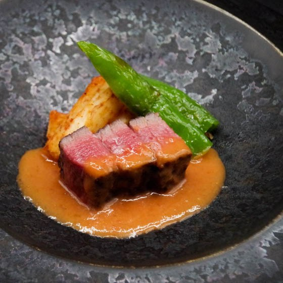
| 営業時間 | ランチ・ディナーとも完全予約制（時間は公式予約ページに記載） |
|---|---|
| 定休日 | 公式予約カレンダーに準ずる（要確認） |
| 住所 | 兵庫県姫路市呉服町3 |
| 予約 | 要 — ☎ 079-262-6767 ／ 公式サイト |
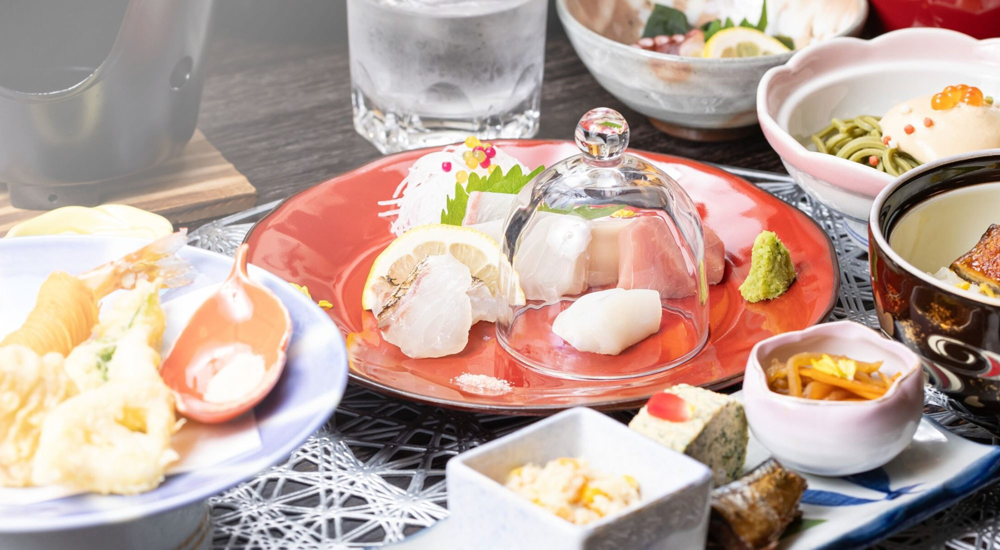
| 営業時間 | ランチ 11:30〜14:00（L.O.13:30）／ディナー 18:00〜21:00（L.O.20:30） |
|---|---|
| 定休日 | 月曜（毎月1回、日曜の定休日あり） |
| 住所 | 兵庫県姫路市御国野町国分寺776-2 |
| 予約 | 要 — ☎ 080-3533-7538 ／ 公式サイト |
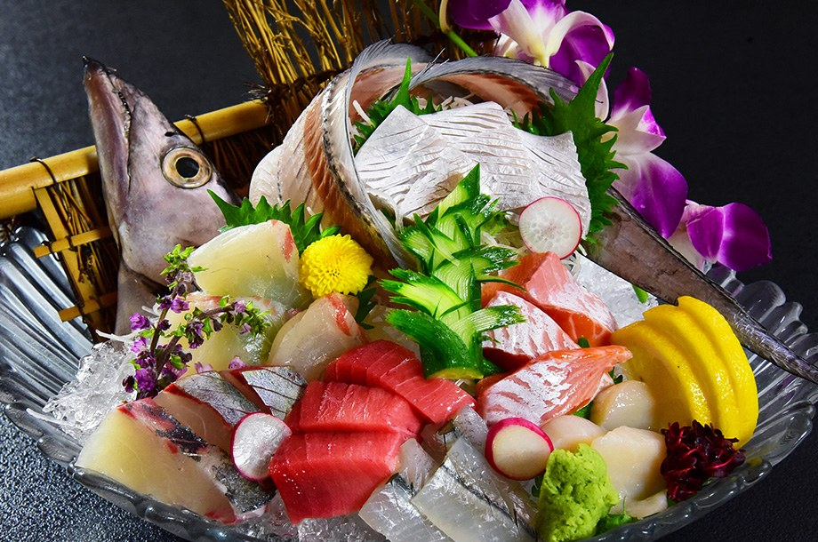
| 営業時間 | 【平日】11:30〜14:30（L.O.14:00）／17:00〜22:00（L.O.21:00） 【土日祝】11:00〜15:00（L.O.14:30）／17:00〜21:00（日祝 L.O.20:00） |
|---|---|
| 定休日 | 水曜 |
| 住所 | 兵庫県姫路市亀井町75番地 |
| 予約 | 推奨 — ☎ 079-222-8150 ／ 公式サイト |
| 営業時間 | 【平日】11:30〜15:00（L.O.14:00）／17:00〜21:00（L.O.20:00、夜は2日前までに要予約） 【土日祝】11:00〜15:00 |
|---|---|
| 定休日 | 火曜、第1・第2月曜 |
| 住所 | 兵庫県姫路市総社本町190番地 |
| 予約 | 推奨（夜は要予約） — ☎ 079-224-1113 ／ 公式サイト |
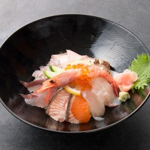
| 営業時間 | 【平日】10:00〜15:00（食堂11:00〜14:30） 【土・祝】9:00〜16:00（食堂11:00〜15:00） 【日】7:30〜16:00（食堂11:00〜15:00） |
|---|---|
| 定休日 | 水曜、第2・第4火曜（祝日の場合は営業） |
| 住所 | 兵庫県姫路市白浜町912-18 妻鹿漁港フィッシュモール内 |
| 予約 | 不要（バーベキューは要予約） — ☎ 079-246-4199 ／ 公式サイト |
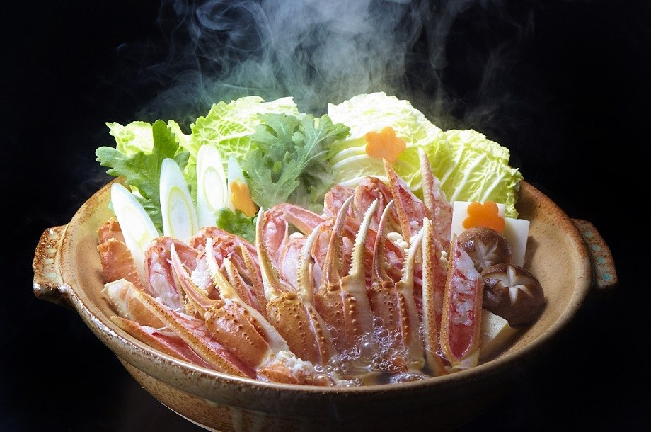
| 営業時間 | 11:30〜21:30（L.O.20:30） |
|---|---|
| 定休日 | 【4〜10月】火・水曜（祝日を除く） 【11〜3月】第2水曜 |
| 住所 | 兵庫県姫路市十二所前町23 |
| 予約 | 推奨 — ☎ 079-285-3939 ／ 公式サイト |
| 営業時間 | 要確認（公式サイトに記載なし） |
|---|---|
| 定休日 | 定休日なし（公式サイト表記） |
| 住所 | 兵庫県姫路市飾磨区構1-85 |
| 予約 | 要確認 — ☎ 079-233-4855 ／ 公式サイト |
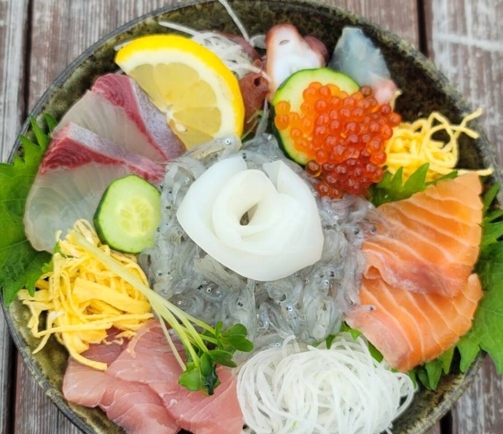
| 営業時間 | 10:30〜14:30（土曜・祝日も同時間） |
|---|---|
| 定休日 | 水曜・日曜 |
| 住所 | 兵庫県姫路市網干区興浜2093-133 網干じばさんひろば 魚吹津内 |
| 予約 | 不要 — ☎ 079-229-9135 ／ 公式サイト |
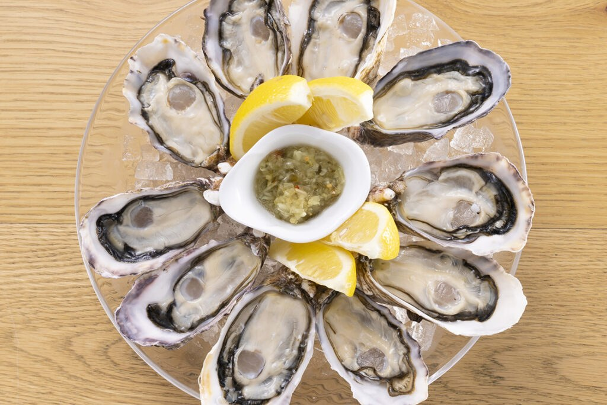
| 営業時間 | 【平日】10:30〜15:30 【土日祝】10:30〜16:30 |
|---|---|
| 定休日 | GW明け〜10月末は水曜・木曜／11月〜GWは水曜 |
| 住所 | 兵庫県たつの市御津町室津850 |
| 予約 | 推奨 — ☎ 079-324-0918 ／ 公式サイト |
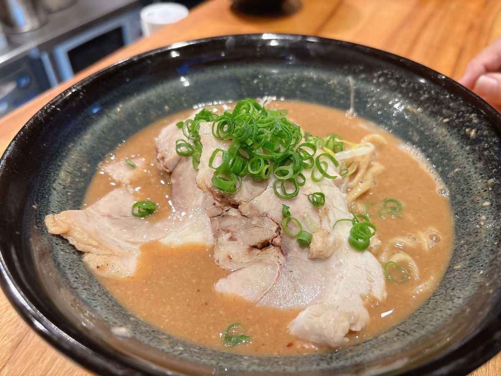
| 営業時間 | 11:30〜14:30／20:00〜24:00（金・土は18:00開店、日曜は18:00〜21:00） |
|---|---|
| 定休日 | 要確認 |
| 住所 | 兵庫県姫路市南町41 |
| 予約 | 不可 — ☎ 079-288-5670 ／ 公式サイト |
| 営業時間 | 22:30〜翌3:00 |
|---|---|
| 定休日 | 要確認 |
| 住所 | 兵庫県姫路市塩町205 クリスタル横丁東館106 1F |
| 予約 | 不可 — 公式サイト |
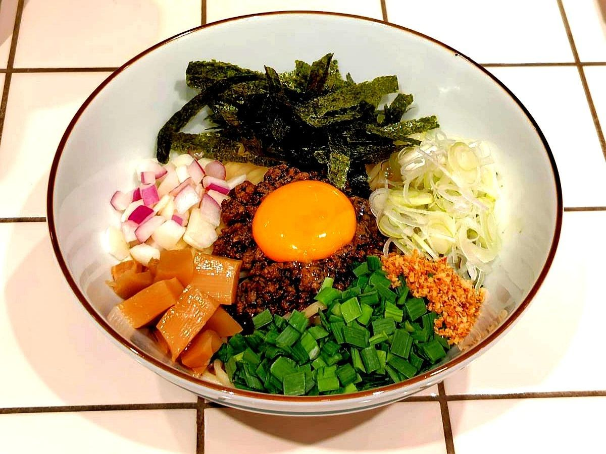
| 営業時間 | 11:00〜14:30／17:30〜22:00 |
|---|---|
| 定休日 | 要確認 |
| 住所 | 兵庫県姫路市忍町23 |
| 予約 | 不可 — 公式サイト |
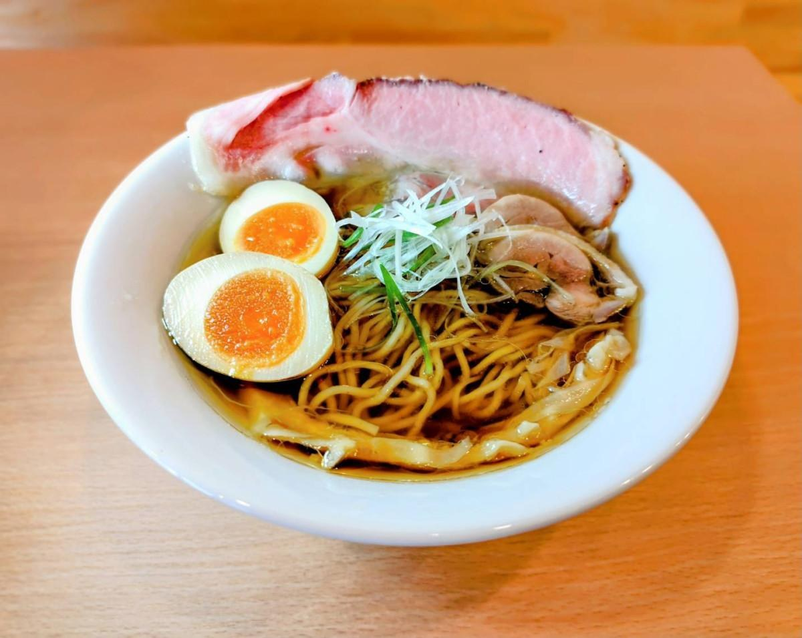
| 営業時間 | 11:00〜15:00／17:00〜22:00 |
|---|---|
| 定休日 | 水曜 |
| 住所 | 兵庫県姫路市元町113-1 元町西ビル102 |
| 予約 | 不可 — ☎ 080-3184-4296 ／ 公式サイト |
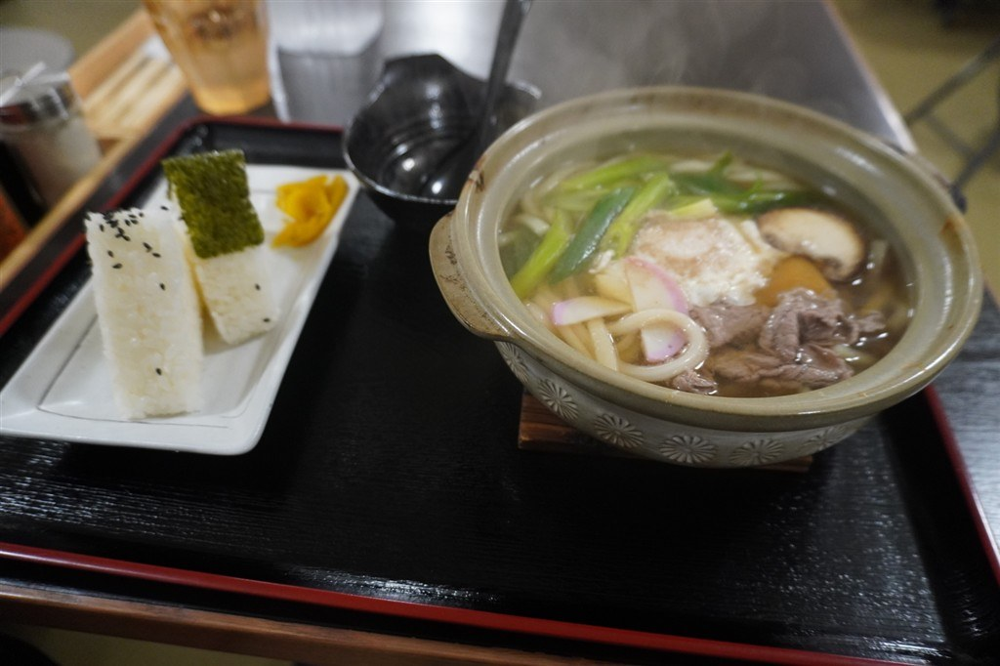
| 営業時間 | 平日6:30〜9:00、11:00〜21:00／土日10:00〜21:00 |
|---|---|
| 定休日 | 隔週木曜 |
| 住所 | 兵庫県姫路市紺屋町78 1F |
| 予約 | 可 — ☎ 079-255-8932 ／ 公式サイト |
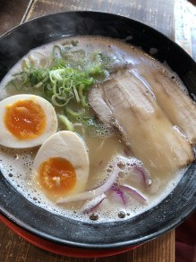
| 営業時間 | 11:30〜15:00／18:00〜24:00 |
|---|---|
| 定休日 | 水曜 |
| 住所 | 兵庫県姫路市辻井1-12-28 |
| 予約 | 不要 — ☎ 079-269-9199 ／ 公式サイト |
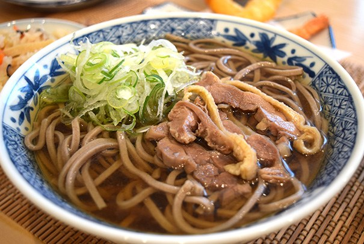
| 営業時間 | 11:00〜15:00／17:00〜20:30 |
|---|---|
| 定休日 | 木曜 |
| 住所 | 兵庫県姫路市野里73-1 |
| 予約 | 不要 — 公式サイト |
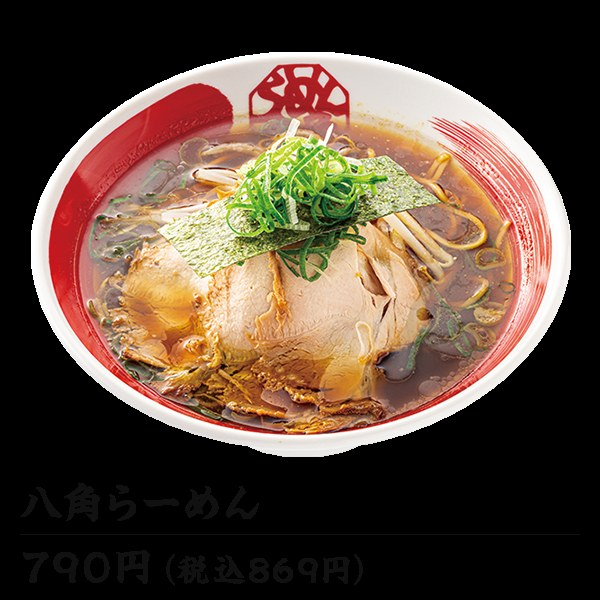
| 営業時間 | 11:30〜翌1:00（L.O.0:30） |
|---|---|
| 定休日 | なし |
| 住所 | 兵庫県姫路市広畑区高浜町1-82 |
| 予約 | 不要 — ☎ 079-239-1677 ／ 公式サイト |
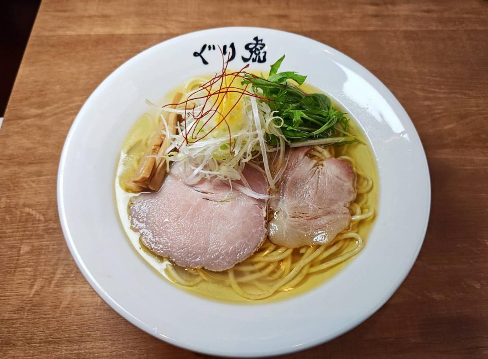
| 営業時間 | 11:00〜23:00（L.O.22:00） |
|---|---|
| 定休日 | 不定休（インスタグラムで告知） |
| 住所 | 兵庫県姫路市飾磨区中野田1丁目12 |
| 予約 | 不可 — ☎ 079-263-8054 ／ 公式サイト |
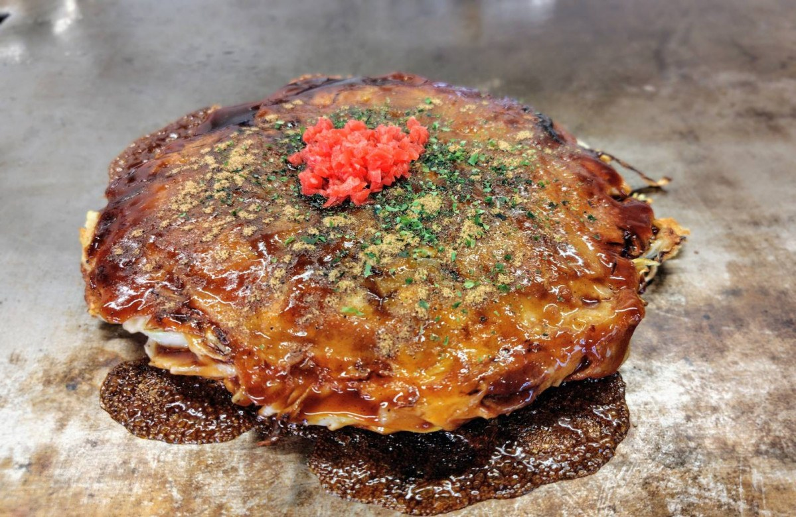
| 営業時間 | 11:30〜14:00／17:00〜21:00 |
|---|---|
| 定休日 | 要確認 |
| 住所 | 兵庫県姫路市東夢前台1丁目 |
| 予約 | 要確認 — ☎ 079-227-5536 ／ 公式サイト |
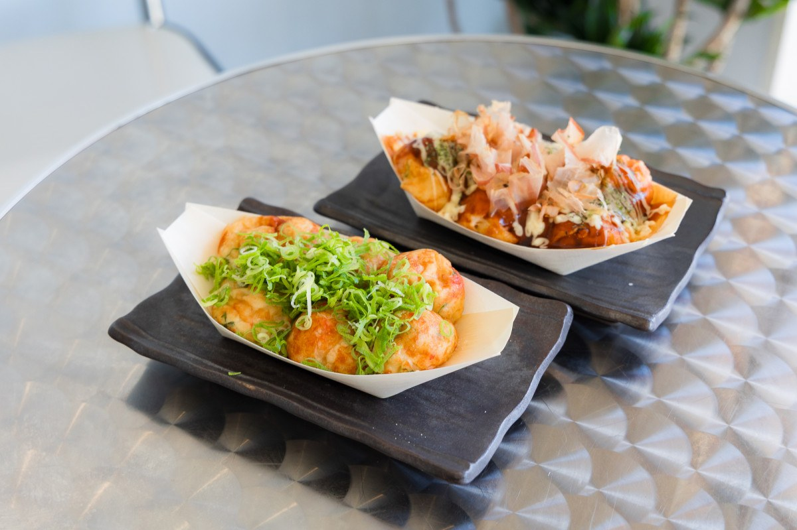
| 営業時間 | 10:00〜20:00 |
|---|---|
| 定休日 | 要確認 |
| 住所 | 兵庫県姫路市大津区天神町1丁目41-5 天満屋ハイツ |
| 予約 | 不要 — ☎ 080-5722-0598 ／ 公式サイト |
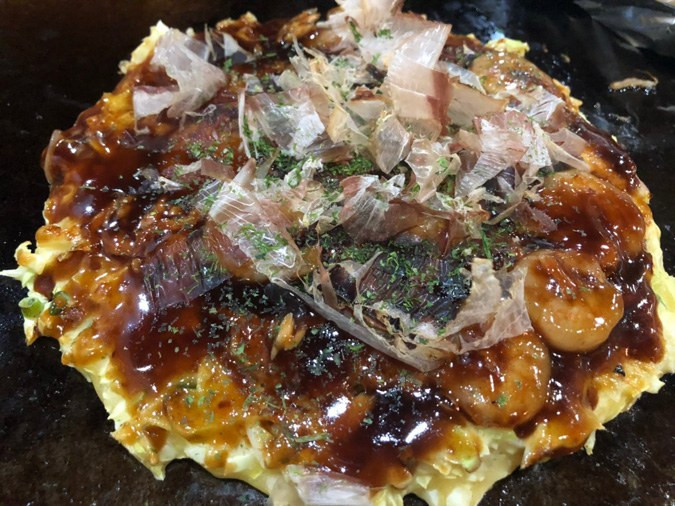
| 営業時間 | 11:00〜21:00（L.O.20:40） |
|---|---|
| 定休日 | 毎週火曜（祝日の場合は営業） |
| 住所 | 兵庫県姫路市網干区大江島寺前町102 |
| 予約 | 可 — ☎ 079-273-1882 ／ 公式サイト |
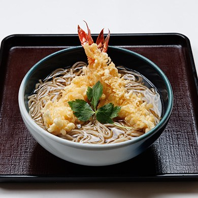
| 営業時間 | 11:00〜15:00（L.O.14:30）／17:00〜20:30（L.O.20:00） |
|---|---|
| 定休日 | 水曜（ほか不定休あり） |
| 住所 | 兵庫県姫路市市川橋通2-38 |
| 予約 | 不可（持ち帰りのみ電話予約） — ☎ 079-226-4108 ／ 公式サイト |
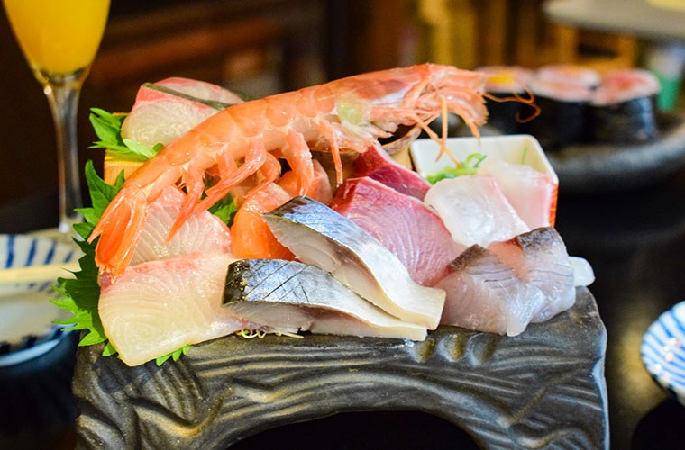
| 営業時間 | 平日17:00〜23:00／土日祝15:00〜23:00 |
|---|---|
| 定休日 | なし（自社ページ記載） |
| 住所 | 兵庫県姫路市東駅前町61 めがやビル1F |
| 予約 | 推奨 — ☎ 050-8882-7005 ／ 公式サイト |
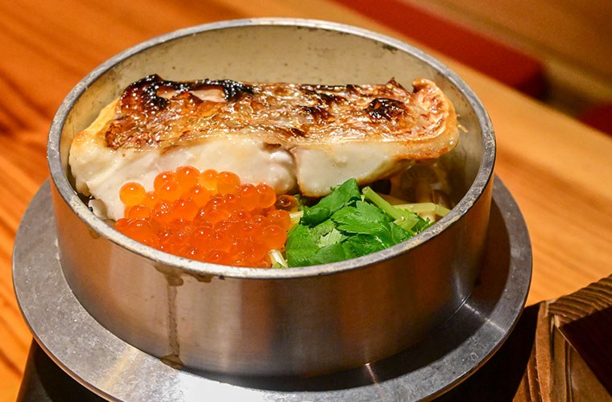
| 営業時間 | 月〜金・祝・祝前日17:00〜23:00（L.O.22:20）／土17:00〜22:30（L.O.21:30） |
|---|---|
| 定休日 | 要確認（取材記事では月〜土の営業時間のみ記載） |
| 住所 | 兵庫県姫路市亀井町84 |
| 予約 | 推奨 — ☎ 079-224-8817 |
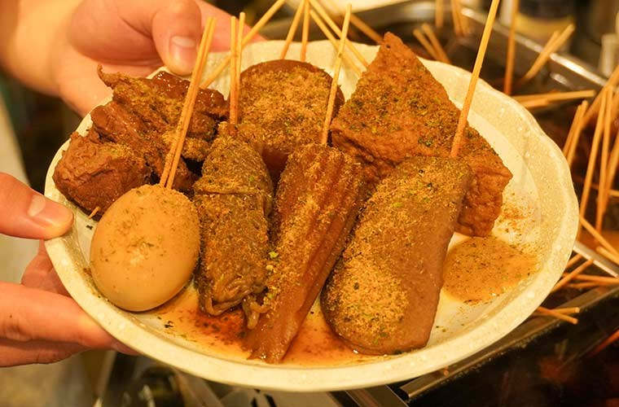
| 営業時間 | ランチ 月〜金11:00〜14:00／ディナー15:00〜23:00（L.O.22:00） |
|---|---|
| 定休日 | 要確認 |
| 住所 | 兵庫県姫路市白銀町53 |
| 予約 | 不可 — ☎ 079-278-6845 |
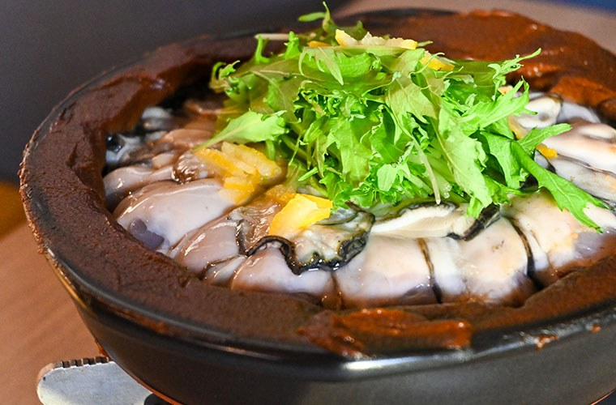
| 営業時間 | 月・水〜金・祝前日17:30〜22:30／土日祝15:00〜22:30 |
|---|---|
| 定休日 | 火曜（記事の営業曜日から推定・要確認） |
| 住所 | 兵庫県姫路市忍町46 |
| 予約 | 推奨 — ☎ 079-280-6766 |
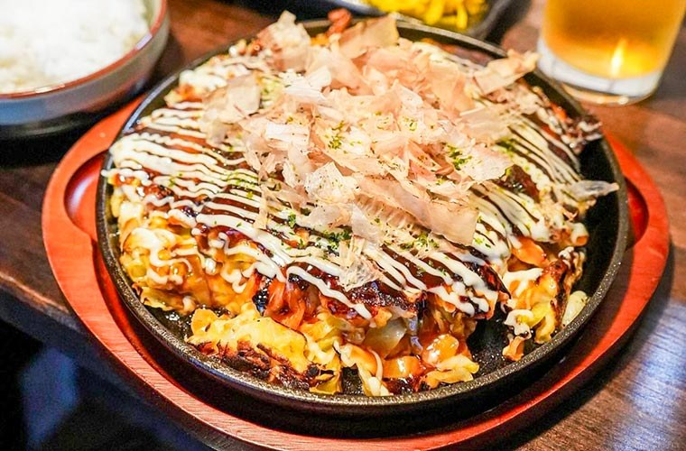
| 営業時間 | 平日18:00〜23:30／土日祝17:30〜23:30（フードL.O.22:30） |
|---|---|
| 定休日 | 要確認 |
| 住所 | 兵庫県姫路市久保町78 |
| 予約 | 推奨 — ☎ 080-1394-2828 |
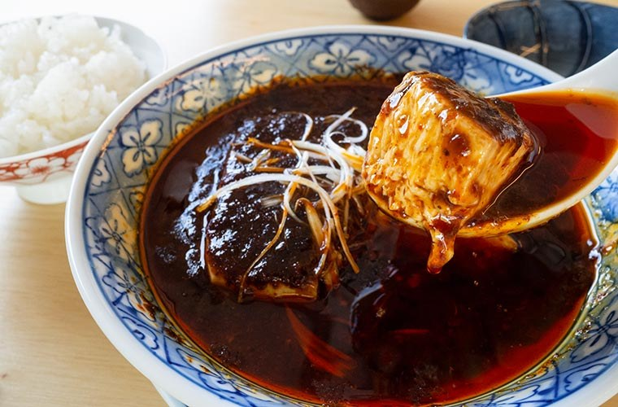
| 営業時間 | 17:30〜23:00（フードL.O.22:00、ドリンクL.O.22:30） |
|---|---|
| 定休日 | 要確認 |
| 住所 | 兵庫県姫路市立町14 第17立町クリスタルビル6階 |
| 予約 | 推奨 — ☎ 079-280-7634 |
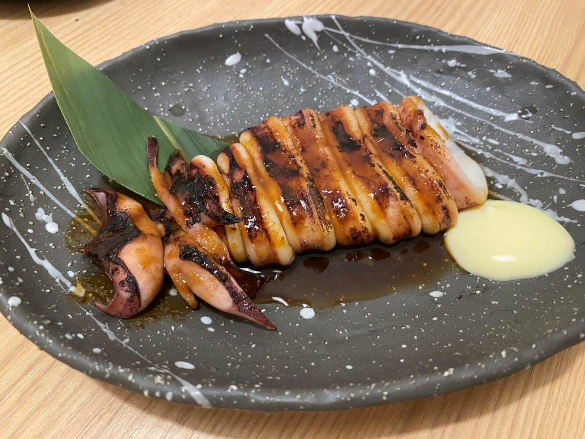
| 営業時間 | 要確認（記事に記載なし） |
|---|---|
| 定休日 | 要確認 |
| 住所 | 兵庫県姫路市駅前町242 IMAGE21ビル2階 |
| 予約 | 推奨（コースは前々日までの予約が必要） — ☎ 050-5459-5450 |
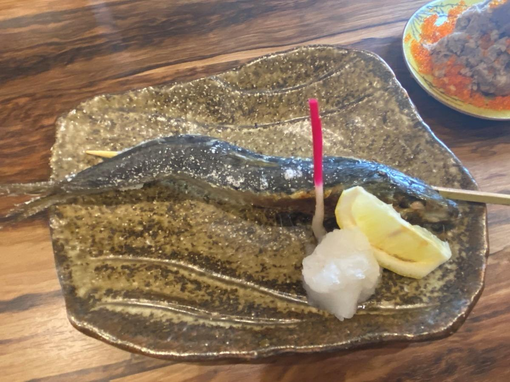
| 営業時間 | 要確認（記事に記載なし） |
|---|---|
| 定休日 | 要確認 |
| 住所 | 兵庫県姫路市豊沢町170 中野ビル1F |
| 予約 | 推奨 — ☎ 080-3515-3865 ／ 公式サイト |
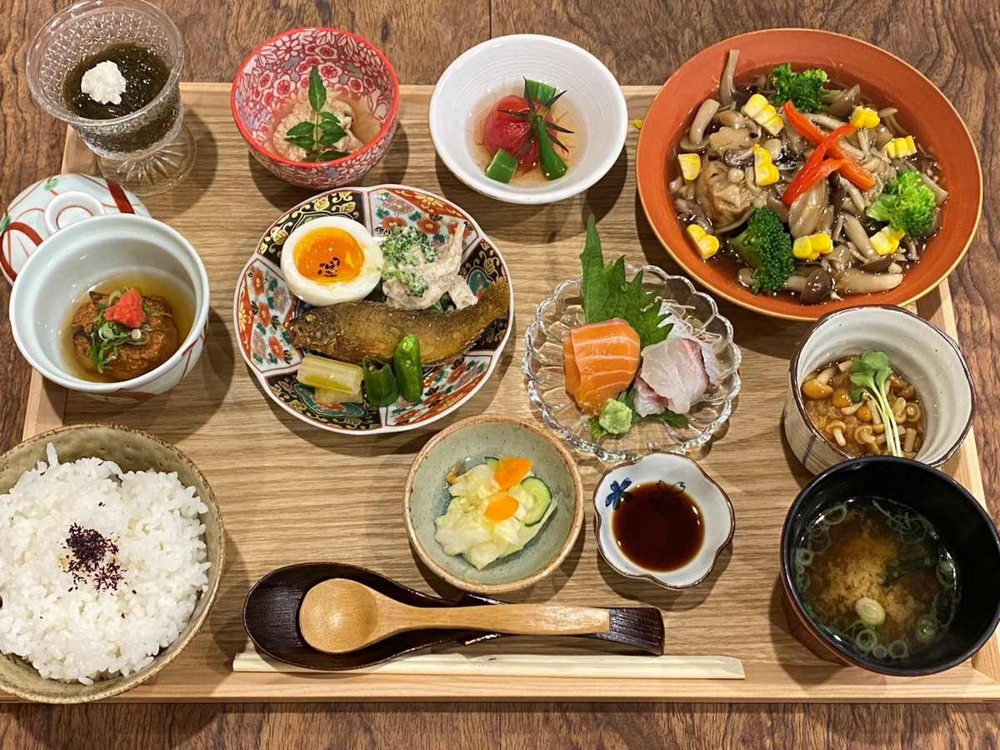
| 営業時間 | 要確認（記事に記載なし。昼・夜とも営業） |
|---|---|
| 定休日 | 要確認 |
| 住所 | 兵庫県姫路市神屋町3-27-1 ピュア東姫路101 |
| 予約 | 推奨 — ☎ 079-289-5271 ／ 公式サイト |
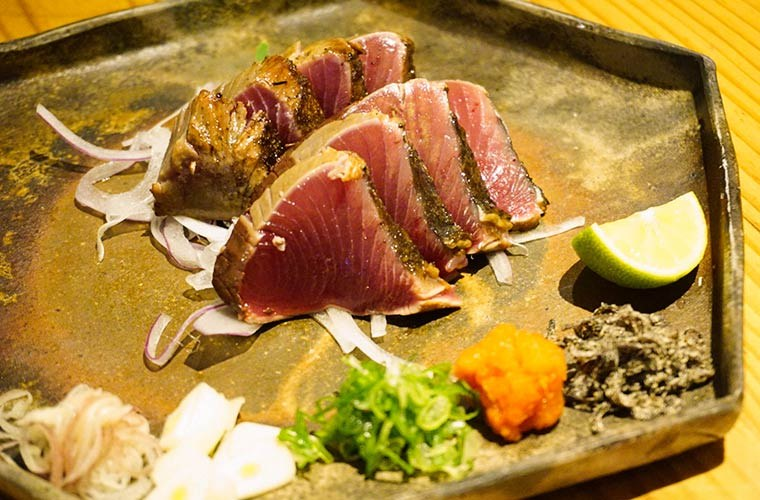
| 営業時間 | ランチ11:30〜14:00（L.O.13:30／平日のみ）／ディナー17:00〜23:00（L.O.22:00） |
|---|---|
| 定休日 | 要確認 |
| 住所 | 兵庫県姫路市西今宿2-1-34 |
| 予約 | 推奨 — ☎ 079-298-2815 ／ 公式サイト |
| 営業時間 | 月〜金17:00〜24:00（L.O.23:00）／土日祝16:00〜24:00（L.O.23:00） |
|---|---|
| 定休日 | 要確認 |
| 住所 | 兵庫県姫路市飾磨区構1丁目86 |
| 予約 | 推奨 — ☎ 079-235-3885 ／ 公式サイト |
| 営業時間 | ランチ 11:00〜15:00（L.O.14:00）／ディナー 18:00〜21:00（金土は22:00まで） |
|---|---|
| 定休日 | 月曜（公式サイトで要確認） |
| 住所 | 兵庫県姫路市中地283-2 |
| 予約 | 推奨 — ☎ 079-293-6323 ／ 公式サイト |
| 営業時間 | ランチ 11:30〜14:30（L.O.14:00）／ディナー 18:00〜21:00（金土日のみ） |
|---|---|
| 定休日 | 水曜 |
| 住所 | 兵庫県姫路市本町174 アネスティ七番館102 |
| 予約 | 可（ランチは予約不可、ディナーのみ電話予約） — ☎ 079-240-5076 ／ 公式サイト |
| 営業時間 | 11:30〜15:00（L.O.14:00）／夜は不定期営業 |
|---|---|
| 定休日 | 要確認（インスタグラムで告知） |
| 住所 | 兵庫県姫路市飾磨区下野田3-275-4 |
| 予約 | 要確認 — ☎ 070-1769-2537 ／ 公式サイト |
| 営業時間 | 10:45〜13:30／18:00〜21:00 |
|---|---|
| 定休日 | 要確認 |
| 住所 | 兵庫県姫路市飾磨区今在家3-48-1 |
| 予約 | 推奨 — ☎ 079-287-8829 ／ 公式サイト |
| 営業時間 | 11:00〜15:00（L.O.14:00） |
|---|---|
| 定休日 | 要確認 |
| 住所 | 兵庫県姫路市山田町南山田105-3 |
| 予約 | 可（電話） — ☎ 079-263-3755 ／ 公式サイト |
| 営業時間 | ランチ 11:30〜14:30（L.O.13:30）／ディナー 18:00〜22:30（L.O.21:00） |
|---|---|
| 定休日 | 要確認 |
| 住所 | 兵庫県姫路市安田3-100 |
| 予約 | 推奨（特別コースは要予約） — ☎ 079-284-6350 ／ 公式サイト |
| 営業時間 | 11:00〜15:00（L.O.14:30・売り切れ次第終了） |
|---|---|
| 定休日 | 要確認 |
| 住所 | 兵庫県姫路市久保町151 シャトー姫路1階-A |
| 予約 | 不可 — ☎ 079-255-7159 ／ 公式サイト |
| 営業時間 | ランチ 10:45〜16:00（L.O.15:00）／ディナー 17:00〜22:00（L.O.21:00） |
|---|---|
| 定休日 | 要確認 |
| 住所 | 兵庫県姫路市紺屋町77 KJビル1階 |
| 予約 | 推奨 — ☎ 079-282-5535 ／ 公式サイト |
| 営業時間 | ランチ 10:30〜16:00／ディナー 金・土のみ 17:30〜21:00 |
|---|---|
| 定休日 | 要確認 |
| 住所 | 兵庫県姫路市網干区興浜2093-133 網干じばさんひろば 魚吹津B |
| 予約 | 要確認 — ☎ 079-227-0105 ／ 公式サイト |
| 営業時間 | ランチ 11:30〜14:30（日曜・祝日は休み）／ディナー 18:00〜22:30 |
|---|---|
| 定休日 | 日曜・祝日のランチは休み（夜の定休は要確認） |
| 住所 | 兵庫県姫路市亀山2-182-2 |
| 予約 | 推奨 — ☎ 079-234-0129 ／ 公式サイト |
| 営業時間 | 11:00〜14:30（L.O.13:30）／17:30〜21:30（L.O.20:00） |
|---|---|
| 定休日 | 要確認 |
| 住所 | 兵庫県姫路市飾西41-1 |
| 予約 | 推奨 — ☎ 079-268-7070 ／ 公式サイト |
| 営業時間 | ランチ 11:00〜15:00（L.O.14:00）／ディナー 17:00〜21:00（L.O.20:30） |
|---|---|
| 定休日 | 要確認 |
| 住所 | 兵庫県姫路市香寺町須加院2-187 |
| 予約 | 可 — ☎ 079-264-2389 ／ 公式サイト |
| 営業時間 | 10:30〜18:00 |
|---|---|
| 定休日 | 要確認 |
| 住所 | 兵庫県姫路市坂田町40 |
| 予約 | 不要 — 公式サイト |
| 営業時間 | 9:00〜（モーニングから営業） |
|---|---|
| 定休日 | 要確認（姫路文学館の運営日に合わせる） |
| 住所 | 兵庫県姫路市山野井町84 姫路文学館 南館 |
| 予約 | 不要 — ☎ 079-293-8228 ／ 公式サイト |
| 営業時間 | 要確認 |
|---|---|
| 定休日 | 要確認 |
| 住所 | 兵庫県姫路市香寺町犬飼570 |
| 予約 | 可 — 公式サイト |
| 営業時間 | 11:00〜18:00（営業日・時間が変わる場合あり） |
|---|---|
| 定休日 | 不定（公式SNSの予定を確認） |
| 住所 | 兵庫県姫路市飾磨区構2-209-1 |
| 予約 | 不要 — ☎ 079-243-2819 ／ 公式サイト |
| 営業時間 | -RECORD-／11:00〜16:00 coffeeBOOTH／10:30〜16:00（L.O.15:30） |
|---|---|
| 定休日 | coffeeBOOTHは火・金曜と不定の土曜のみ営業 |
| 住所 | 兵庫県姫路市網干区新在家569 |
| 予約 | 不要 — ☎ 079-255-2584 ／ 公式サイト |
| 営業時間 | 7:15〜18:00 |
|---|---|
| 定休日 | 月曜 |
| 住所 | 兵庫県姫路市飾磨区矢倉町2丁目8 |
| 予約 | 不要 — ☎ 079-237-5616 ／ 公式サイト |
| 営業時間 | 10:00〜17:00（無くなり次第終了） |
|---|---|
| 定休日 | 月曜・木曜 |
| 住所 | 兵庫県姫路市久保町151 シャトー姫路1階-B |
| 予約 | 要確認 — ☎ 079-255-5799 ／ 公式サイト |
| 営業時間 | 9:00〜18:00 |
|---|---|
| 定休日 | 要確認 |
| 住所 | 兵庫県姫路市東辻井4丁目1-52 ドミール東辻井1F-E |
| 予約 | 要確認 — ☎ 079-262-9711 ／ 公式サイト |
| 営業時間 | 平日8:30〜18:00／日曜・祝日8:30〜17:00 |
|---|---|
| 定休日 | 火曜 |
| 住所 | 兵庫県姫路市広畑区本町6丁目696（広栄橋西詰） |
| 予約 | 不要 — ☎ 079-236-0302 ／ 公式サイト |
| 営業時間 | 9:00〜18:00 |
|---|---|
| 定休日 | 水曜 |
| 住所 | 兵庫県姫路市下手野4丁目11-14 |
| 予約 | 不要 — ☎ 079-297-7598 ／ 公式サイト |
| 営業時間 | 10:00〜18:00（イートインは平日のみ・完全WEB予約制） |
|---|---|
| 定休日 | 月曜・火曜 |
| 住所 | 兵庫県姫路市大塩町宮前17 |
| 予約 | 要（イートインのみ・WEB予約） — ☎ 079-254-6066 ／ 公式サイト |
本ガイドは個人利用目的で作成。掲載情報は2026年9月時点の調査に基づく。写真出典: 各店の公式サイト・公式SNS、および地域情報サイト等の掲載写真（著作権は各サイト・各撮影者に帰属）。引用元は店ごとにカード内へ明記。